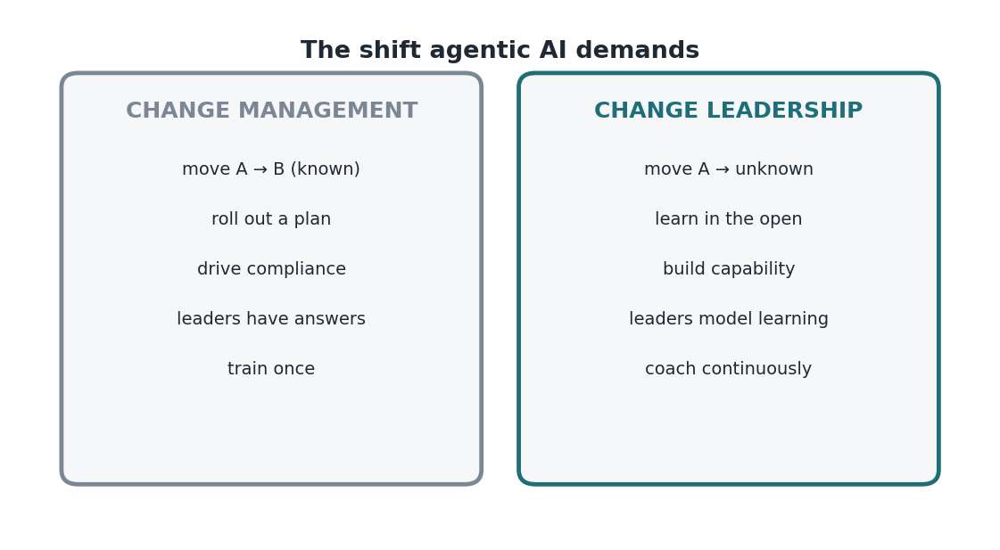

Edisi 9 — Dari change management ke change leadership
Di balik bahasa strateginya, ada pola kegagalan yang praktis: organisasi menerapkan mekanika rollout ke masalah yang butuh leadership, dan nilainya nggak pernah sampai. Risetnya blak-blakan soal ini — transformasi AI adalah reinvention soal bagaimana kerjaan dilakukan, dan mereka butuh change leadership, bukan cuma change management. Memperlakukan sebuah reinvention sebagai rollout itu kesalahan kategori, dan itu mahal.
Bedanya jelas. Change management mengasumsikan tujuan yang diketahui (A→B), sebuah rencana, dan dorongan buat kepatuhan; ini tool yang tepat waktu kamu bisa lihat B-nya. Change leadership mengasumsikan tujuan yang belum diketahui (A→suatu tempat), pembelajaran berkelanjutan, dan pembangunan kapabilitas; ini tool yang tepat waktu kamu nggak bisa. Agentic AI persis di kasus kedua. Tujuannya beneran emergent, jadi mekanika yang berhasil buat migrasi yang sudah diketahui, justru menyesatkan di sini.

Biaya dari ketidakcocokan ini muncul sebagai data hambatan yang sudah kita lihat: leader menempatkan perubahan dan cara kerja bersilo di atas infrastruktur sebagai penghalang nilai AI. Itu masalah leadership, bukan masalah project-management. Kamu bisa menjalankan rencana rollout yang sempurna dan tetap gagal kalau orang nggak percaya, nggak belajar, dan nggak mengadopsi — dan trust, pembelajaran, dan adopsi itu justru yang dihasilkan leadership, bukan management.
Operating model yang menghasilkan: perlakukan eksperimen sebagai bukti dan kesalahan sebagai kurikulum. Daripada deployment besar-besaran yang diukur dari kelengkapan, jalankan banyak eksperimen kecil yang diukur dari pembelajaran, lalu sebarkan yang berhasil. Ini lebih murah (taruhan kecil), lebih cepat (pembelajaran paralel), dan lebih tahan lama (kapabilitas terus bertambah) dibanding rollout yang monolitik. Ini juga membalik deskripsi kerjaan leader — dari memiliki jawaban, jadi mendesain eksperimen dan menyingkirkan hambatan.
Ada sinyal performa yang mencolok di datanya: karyawan di organisasi berkinerja tinggi sekitar 3x lebih mungkin bilang leader mereka yang memegang agenda AI-nya. Kepemilikan di sini bukan berarti punya semua jawaban; artinya secara kelihatan memimpin pembelajarannya. Perilaku itu gratis secara dolar dan mahal secara ego, dan itu yang membedakan organisasi yang beneran menangkap nilai AI dari yang cuma membelinya.
Buat leader yang memutuskan ke mana perhatian terbatasnya diarahkan, implikasinya jelas: investasikan lebih sedikit buat menyempurnakan rencana rollout dan lebih banyak buat membangun sistem pembelajaran — eksperimen yang aman buat gagal, pelajaran yang dibagikan, dan sikap ingin tahu yang terbuka dari level atas. Itu konfigurasi yang menurut buktinya beneran mewujudkan hasil, bukan cuma melaporkan aktivitas.
Ada baiknya kita kuantifikasi risiko kalau ini kebalik, karena ini nggak abstrak. Program yang dikelola dengan rollout bisa kelihatan sehat di semua metrik proyek — tepat waktu, sesuai anggaran, pelatihan selesai — dan tetap memberikan nilai mendekati nol kalau tool-nya nggak dipakai. Itu jebakannya: metrik management mengukur aktivitas, dan aktivitas bukan adopsi. Program yang dipimpin dengan leadership mengukur pembelajaran dan penggunaan, jadi bisa menangkap kegagalan "diam-diam nggak dipakai" ini lebih awal, selagi masih ada waktu buat menyesuaikan. Bedanya antara dua pendekatan ini nggak kelihatan di laporan peluncuran; itu baru kelihatan enam bulan kemudian, apa beneran ada yang berubah atau nggak. Pilih model yang gagalnya keras dan cepat, dibanding yang gagalnya diam-diam dan lambat.
Forward ini ke tim leadership kamu: kita nggak punya masalah rollout, kita punya peluang leadership — mari kita jalankan eksperimen dan belajar secara terbuka.
Sumber
- Reinvention butuh change leadership; perubahan/silo sebagai hambatan utama; leader 3x lebih mungkin memegang AI di performer tinggi — McKinsey (7 Agustus 2026).